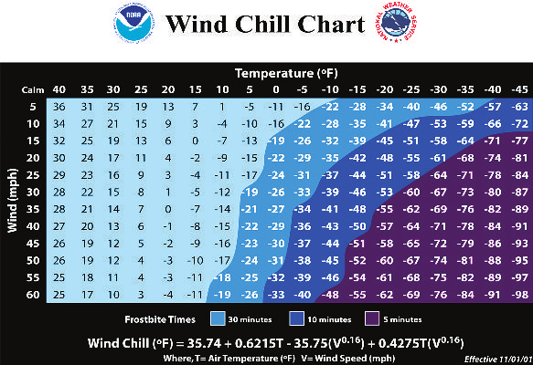
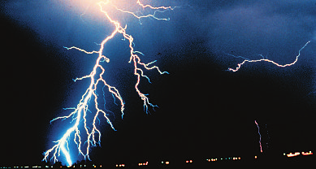
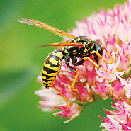
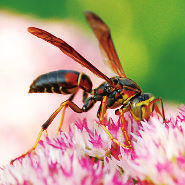
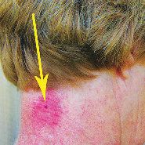

NOSE INJURIES
Nosebleed
Nosebleeds are not usually serious. They commonly occur because of dry air or high altitude, an injury to the nose, or a medication (especially a blood thinner such as warfarin [Coumadin]). Blowing or picking the nose can also cause a nosebleed.
■ Signs and symptoms: Blood coming from the nostrils after nose blowing, sneezing, picking, illness, or injury.
INJURY
2182_Tab04_075-104.qxd 8/18/11 12:18 PM Page 96
INJURY
■ Treatment: Tilt the head forward. Squeeze the nose shut by pinching the nostrils and breathe through the mouth. If bleeding does not stop, apply a cold compress and reapply pressure. If bleeding continues after 30 minutes, seek immediate medical attention.
Object in the Nose
Children sometimes put small objects such as beads, marbles, or candy up their noses.
■ Signs and symptoms: A tender, swollen nose with a yellow discharge draining from it.
■ Treatment: Have the child pinch the other nostril closed and try to blow the object out. If you can see the object, try to remove it with blunt-nosed tweezers. Hold the child’s head still, and use care not to push the object farther in. If the child resists and the object is still not dislodged, seek immediate medical attention.
SHOCK
Shock is caused by inadequate delivery of blood to the vital organs, especially the brain, heart, and kidneys. It may develop after sudden illness, infection, injury, burns, heart failure, bleeding, anaphylaxis, or fluid loss (vomiting or diarrhea). Sometimes even mild injury will lead to shock. Prompt treatment can save a person’s life.
■ Signs and symptoms: Cool, pale, moist skin; fast breathing; and rapid, weak pulse. Weakness, dizziness, excessive thirst; confusion or anxiety; and nausea or vomiting.
■ Treatment: Check for breathing problems and any bleeding. Lay the person face up with feet raised unless you suspect head, neck, or back injuries. Try to control bleeding with direct pressure. Keep the person warm; use a blanket or sheet, depending on the weather.
Don’t give anything to eat or drink. Seek immediate medical attention. Continue to monitor airway, breathing, and circulation until help arrives.
2182_Tab04_075-104.qxd 8/18/11 12:18 PM Page 97
SPRAIN AND STRAIN
Ligaments connect one bone to another; tendons connect muscle and bone. A sprain is the stretching or tearing of ligaments when a joint is twisted beyond its normal range of motion. A strain is caused by overstretching or tearing a muscle or tendon.
■ Signs and symptoms: Swelling, severe pain, and inability to move the limb normally because of both weakness and pain.
■ Treatment: During the first 48 to 72 hours, apply an icepack or cold pack for 10 to 15 minutes at a time each hour. This treatment reduces swelling. Keep a damp cloth between the skin and the pack so the cold doesn’t damage the skin. Heat should not be used because it encourages internal capillary bleeding and increases swelling. Use a compression wrap such as an elastic bandage to prevent swelling and support the joint. Don’t wrap it too tightly. If possible, elevate the injury above the level of the heart to reduce swelling.
SAFETY TIP—Create a homemade flexible cold pack with
★ rubbing alcohol. Mix one part rubbing alcohol with three parts water in a heavy-duty self-closing plastic freezer bag. Mark it “Cold pack:
Do not eat,” and set in your freezer. Soon you’ll have a slushy, comfortable cold pack.
TOOTH INJURIES
A tooth can be knocked out by blunt trauma or another injury. It can also be chipped by a blow to the mouth or by inadvertently chewing on a hard object.
■ Signs and symptoms: Sensitivity to heat, cold, and sweets. Pain and facial swelling. Bleeding will occur if a tooth is partially or fully knocked out.
■ Treatment: Call a dentist if the injury is localized to the tooth.
Otherwise, seek emergency care. Give aspirin (for a person more than
INJURY
2182_Tab04_075-104.qxd 8/18/11 12:18 PM Page 98
INJURY
18 years old), ibuprofen, or acetaminophen for pain. If a permanent tooth is knocked out, the dentist may be able to reimplant it. This works best within about 30 minutes of the injury. Touch the tooth only by the top (crown), not the root. On the way to the dentist’s office, keep the tooth moist or it will die within minutes. Transport it in milk or saliva; water is not recommended. To control bleeding around the injury site, have the person bite down gently on a gauze pad.
WOUNDS
Closed Wounds
Closed wounds can occur when a person is punched in the face or abdomen, falls down a flight of stairs, or suffers other mishaps. The skin will remain intact, with bleeding occurring just under the skin or deeper in the body. On the body surface, closed wounds are called bruises.
Internal bleeding is caused by wounds deeper in the body.
Bruise
A bruise (contusion) is caused when small blood vessels under the skin bleed after a hit or fall. People who take aspirin or blood thinners may bruise more easily because the medication increases the length of time it takes for their blood to clot.
■ Signs and symptoms: Redness on impact, with the area turning deep blue later. Pain, especially if a large area is affected.
■ Treatment: Apply ice or cold packs to the affected area for 10 minutes.
If an arm or leg is affected, elevate the limb. Give acetaminophen or ibuprofen for pain and swelling. If the bruising is severe, there may be underlying tissue, organ, or bone damage; seek immediate medical attention.
Internal Bleeding
Internal bleeding is often hard to detect but should be suspected when injuries are severe, as in a motor vehicle accident or a serious fall.
■ Signs and symptoms: Bleeding from the nose, mouth, ears, or rectum. Growing swelling and tension in the chest, abdomen,
2182_Tab04_075-104.qxd 8/18/11 12:18 PM Page 99 or another region. Extensive bruising, restlessness, and signs of shock (page 96).
■ Treatment: Treat for shock (page 96), and seek immediate medical care.
Open Wounds
In open wounds, the protective barrier of the skin has been breached.
Bleeding is visible, and the potential for infection is significant.
Abrasion or Scrape
Abrasions are small tears to the skin caused, for example, by rubbing your arm against a brick or stone surface or “skinning” your knee when falling off a bike. Abrasions may have dirt and grime embedded in them.
A scrape is a series of tiny cuts that may occur if you brush up against a bush or plant that has thorns. Abrasions and scrapes are usually minor.
The first step is to control the bleeding.
■ Treatment: Bleeding from a minor wound will usually stop on its own after you apply pressure with a clean cloth or bandage. Once the bleeding is under control, wash the wound with soap and water.
Bandage the wound to keep it clean. Use an antibiotic ointment to prevent infection.
Amputation
A traumatic amputation is the partial or full severing of a body part, most commonly a finger, toe, ear, or limb (arm or leg).
■ Treatment: A complete amputation may not bleed because the blood vessels tend to constrict. In some cases, however, superficial or deep bleeding may be severe. Follow page 80 on bleeding control. Wrap the amputated part in clean, slightly moist gauze, and place it in a plastic bag. Keep the part cool but do not put it directly on ice. Seek immediate medical attention.
Bullet Wounds
A bullet wound will cause extensive tissue damage beyond the path of the bullet. Damage from a bullet is affected by several factors: the
INJURY
2182_Tab04_075-104.qxd 8/18/11 12:18 PM Page 100
INJURY
distance from origin, the size and speed of the bullet, its tumble (rotation), and its degree of fragmentation. In.22-caliber rifles and M-16 firearms, the bullet sizes are similar, yet the resulting damage differs considerably. The wound caused by the M-16 is much more extensive.
In this case, the speed of the firearm makes a difference. A bullet that fragments when it leaves the gun, such as a shotgun shell filled with small pellets, will move more slowly but cause damage over a wider area of the body.
■ Treatment: Apply direct pressure with a clean cloth or bandage to control bleeding. The bullet may stay lodged in the body or pass right through. If possible, check for entry and exit wounds. Check airway, breathing, and circulation. Seek immediate medical care.
Fishhook Injury
Fishhook injuries generally occur on the face, ears, back, or hands.
These injuries can be serious if the barb of the hook is close to the eye.
Because fishhooks are dirty and contaminated with bacteria, the wound is at risk for a skin infection.
■ Treatment: Cut the fishing line, stop the bleeding, and clean the wound with soap and water. In some cases, the hook can be backed out of the injury site with little pain. Avoid removing hooks near joints, tendons, bones, ligaments, or arteries. If the injury is to the face or in or near the eye, shield the hook from further movement and seek immediate medical care. If the hook is removed, clean the wound with soap and water, use antibiotic ointment, and bandage the area. Even if the wound is minor, check with the health-care provider about the need for a tetanus shot or booster.
2182_Tab04_075-104.qxd 8/18/11 12:18 PM Page 101
A
B
Simple fishhook removal: (A) push barb through skin, (B) cut barb off, and (C) back hook out of skin.
■ If the hook is in a finger and has only one barb, a simple removal technique is to force the barb through the skin and cutting the barb off with wire cutters. Back the remainder of the hook out of the wound the way it went in.
INJURY
2182_Tab04_075-104.qxd 8/18/11 12:18 PM Page 102
INJURY
A
B
Multiple-barb fishhook removal: (A) push hook through skin, (B) cut eye off hook, and (C) remove hook.
■ If the hook has multiple barbs, force the point through the skin, cut off the eye of the hook, and push the shank forward until you can remove it.
Impaled Objects
An impaled object is a sharp object that has become imbedded in the skin or body.
■ Treatment: Do not remove an impaled object if removal would result in more bleeding or pain. For example, do not remove a large impaled object (e.g., a stick) or an object lodged in the eye.
2182_Tab04_075-104.qxd 8/18/11 12:18 PM Page 103
For minor wounds, dirt and other loose foreign material should be carefully washed out with soap and water. Seek immediate medical attention.
Laceration (or Cut)
A laceration, or cut, may have a clean edge or may be irregular and torn.
The injury can be minor or severe. The first step is to control the bleeding.
■ Treatment: Bleeding from a minor wound will usually stop on its own after you apply pressure with a clean cloth or bandage. If the wound is bleeding heavily or spurting blood, follow the steps for bleeding management on page 80. Once the bleeding is under control, wash the wound with soap and water. Bandage the wound to keep it clean. Apply an antibiotic ointment. Check with the healthcare provider about the need for a tetanus shot or booster. If you think the person may need stitches or if the bleeding is severe, seek immediate medical attention.
SAFETY TIP—Does the wound need stitches? For best results,
★ cuts that need stitches should get them within 6 to 8 hours.
Stitches can help cuts heal with less scarring. After you’ve washed the cut with soap and water and the bleeding has stopped, pinch the sides of the cut together. If it looks better that way, the wound may heal faster and better with stitches.
Puncture Wound
Sharp, pointed objects (nails, needles, teeth, and knives) cause puncture wounds that go through the skin. This type of wound can easily get infected because it’s deep: this makes it hard to clean and creates a warm, moist place for bacteria to grow. Puncture wounds can lead to tetanus if left untreated.
■ Treatment: Control the bleeding, and then clean the wound with soap and water. If the wound is minor, place some antibiotic ointment (or cream) over the wound to prevent infection and cover
INJURY
2182_Tab04_075-104.qxd 8/18/11 12:18 PM Page 104
INJURY
with a bandage to keep it clean and protected. If it’s major, seek medical attention and check with the health-care provider about the need for a tetanus shot or booster.
Splinter
A splinter is a small, sharp object, usually a thorn or a tiny piece of wood or metal, embedded in the skin.
■ Treatment: Put a piece of tape over the splinter and pull it up. If that doesn’t work, grip the end of the splinter with tweezers and gently try to pull it out. If the splinter isn’t sticking out where you can reach it, clean a needle with alcohol and make a small hole in the skin over the end of the splinter. Then lift the splinter with the tip of the needle until you can grab it with the tweezers. After the splinter is removed, wash the area with soap and water. Watch for signs of infection. If the splinter is large, deep in the skin, or in the eye, do not try to remove it and seek immediate medical attention.
Stab Wound
Stab wounds produced by a knife or ice pick, for example, may go deep enough to penetrate tissues and organs, including bones.
■ Treatment: Stop the bleeding with direct pressure; clean with soap and water and cover with a sterile bandage. Seek immediate medical care.
SAFETY TIP—Any injury involving an open wound can lead to
★ tetanus. This disease is caused by soil bacteria introduced into open wounds. As the bacteria grow, they produce a toxin that provokes severe muscle spasms and interferes with breathing. Puncture wounds are fertile ground for tetanus. If you haven’t had a tetanus shot in the last 5 years or don’t know when your last shot was, see your health-care provider within 2 days of the injury and get a shot.
2182_Tab05_105-128.qxd 8/18/11 12:20 PM Page 105
Tab 5: Environmental Emergencies
The human body has evolved over thousands of years to thrive in an environment providing just the right range of temperature, pressure, and humidity, as well as shelter from storms. That’s why exposure to environmental extremes such as altitude, cold or heat, lightning, and water can have a disastrous effect on your body.
ALTITUDE SICKNESS
Altitude is measured by feet (or meters) above sea level. The pressure that the air around you (the atmosphere) exerts on your body decreases with an increase in altitude. This means that the higher you go, the less oxygen is available for breathing.
The amount of oxygen your body needs to function doesn’t change.
So initially, as you move to higher altitudes, your breathing rate increases spontaneously, even while you’re at rest. Over time, your oxygen-deprived body develops mechanisms to adapt. Your heart’s output increases, your blood becomes more acidic, more red blood cells are produced, and your oxygen use changes. This process is called acclimatization.
Altitude sickness, or acute mountain sickness, occurs when people go to a higher altitude faster than their bodies can acclimatize.
Most problems at high altitude are preventable, but climbing higher without proper acclimatization can lead to potentially serious, even life-threatening, situations.
ENVIRO
2182_Tab05_105-128.qxd 8/18/11 12:20 PM Page 106
ENVIRO
HIGH ALTITUDE: 4950–11,500 ft (1509–3505 m). Exercise performance decreases and resting respiration increases. Altitude sickness is common with rapid ascent above 8200 ft (2500 m).
VERY HIGH ALTITUDE: 11,500–18,050 ft (3505–5502 m). Extreme shortness of breath may occur during exercise or sleep and with altitude sickness.
EXTREME ALTITUDE: Above 18,050 ft (5502 m). Severe shortness of breath occurs and acclimatization is impossible. Sudden ascent to this altitude without supplemental oxygen is dangerous.
Guidelines for Acclimatization
■ Train for both endurance and strength before going to high elevations.
■ Make day trips to a higher altitude and return to a lower altitude for sleep.
■ Drink plenty of water to prevent dehydration. In high altitudes, people have a tendency to breathe deep and fast. This will cause the body to lose moisture and result in dehydration.
■ Avoid alcohol, caffeine, and salty foods because these will increase the likelihood of dehydration.
■ Ascend gradually to allow for acclimatization. Above 10,000 ft
(3048 m), ascend no more than 2000 to 3000 ft (610 to 915 m)
in a 24-hour period.
■ Follow the “golden rule”: climb high, sleep low. Above 10,000 ft
(3048 m), no matter how high you climb always make sure you come back to a base camp that’s no more than 1000 ft (310 m)
higher than your previous night’s sleeping elevation.
■ Take a rest day every 2 to 3 days.
■ Until acclimatized, avoid excessive exercise and fatigue.
■ Consider taking Diamox (acetazolamide, a prescription drug) or ginkgo biloba (an herbal medication) when you arrive at high altitude to reduce the chances of mountain sickness.
2182_Tab05_105-128.qxd 8/18/11 12:20 PM Page 107
SAFETY TIP—Do not ascend to a higher altitude if you are feel★ ing sick; take a rest day or descend. Descend if you do not feel better within 24 hours.
Acute Mountain Sickness
■ Signs and symptoms: Headache, nausea, insomnia, fatigue, and loss of appetite. Usually develops at elevations over 8200 ft (2500 m).
■ Treatment: Stop ascent and rest for a day. Maintain adequate hydration and nutrition. Use medications for pain, nausea, and acclimatization.
Moderate
■ Signs and symptoms: More significant than mild acute mountain sickness. Headache not relieved by rest or medication, nausea and vomiting, shortness of breath at rest, fatigue and weakness at rest, loss of appetite, and insomnia.
■ Treatment: Treat as for mild acute mountain sickness, but if the person is short of breath at rest, supplemental oxygen is a necessity.
Descent is mandatory and immediate.
Severe
■ Signs and symptoms: All the signs and symptoms of moderate acute mountain sickness, along with difficulty walking, extreme shortness of breath at rest, increased heart rate, persistent dry cough, and confusion or delirium.
■ Treatment: Descent is mandatory and immediate, with evacuation to a medical facility. Administer oxygen and maintain proper hydration in the process. If the person is vomiting, an antiemetic (a drug to counteract vomiting and nausea) may be helpful.
High-Altitude Cerebral Edema
■ Signs and symptoms: Mental status changes (confusion, lethargy), decreased consciousness or coma, severe headache, and nausea
ENVIRO
2182_Tab05_105-128.qxd 8/18/11 12:20 PM Page 108
ENVIRO
and vomiting. High altitude and lower air pressure have caused fluid to leak from the capillaries and build up in the brain.
■ Treatment: Descent is mandatory and immediate. Follow general respiratory protocols: administer oxygen, open the airway, and give rescue breathing if necessary. Request an emergency response team and begin emergency medications. Administer Decadron (dexamethazone, a drug to decrease brain swelling) if available.
High-Altitude Pulmonary Edema
■ Signs and symptoms: Shortness of breath, cough, cyanosis (blue tinge) around the lips and mouth, crackles (fluid in lungs), gurgling, blood-tinged sputum, and increased respiratory and heart rates.
High altitude and lower air pressure have caused fluid to leak from the capillaries and build up in the lungs.
■ Treatment: Descent is mandatory and immediate. Follow general respiratory protocols: administer oxygen, open the airway, and give rescue breathing if necessary. Request an emergency response team, and begin emergency medications.
COLD-RELATED PROBLEMS
Cold-related problems include frostnip, frostbite, and hypothermia. In some settings, snow blindness and trench foot may also occur.
Appropriate clothing is the most important protection from cold-related injury. Layers provide insulation by trapping body heat; the best cold-weather clothing includes several lightweight layers made of materials that conserve body heat and prevent moisture from building up. A warm head covering, gloves or mittens, and warm socks inside boots or heavy shoes prevent heat loss from the head, hands, and feet.
2182_Tab05_105-128.qxd 8/18/11 12:20 PM Page 109
“Drinking alcohol will help you stay warm.”
R False: Alcohol causes blood vessels to dilate.
TH
E
T This increases blood flow to the surface of the skin and away from your body’s core (brain and
MY
BUS vital organs). Heat is then quickly radiated away from the body.
What Is Wind Chill?
Wind chill is a measure of how quickly the combination of wind speed and temperature remove warmth from exposed skin. As wind speed increases and air strikes your body, convective heat transfer draws away heat more quickly, and the air feels much colder than the temperature the thermometer displays.
SAFETY TIP—Conversion formulas for Celsius(°C) and
★ Fahrenheit (°F).
°C ⫽ (°F ⫺ 32) ⫻ 5/9
°F ⫽ °C ⫻ 9/5 ⫹ 32
ENVIRO

2182_Tab05_105-128.qxd 8/18/11 12:20 PM Page 110
ENVIRO
2182_Tab05_105-128.qxd 8/18/11 12:20 PM Page 111
Frostnip
In frostnip, vulnerable areas such as the ear lobes, nose, fingers, and toes become cold. Frostnip is the precursor to frostbite, so it must be taken care of immediately.
■ Signs and symptoms: A sense of cold in vulnerable or unprotected areas of the body. Pale skin that feels numb or tingles until warming begins.
■ Treatment: Frostnip is easily reversible with rewarming techniques, extra clothing, and shelter from the elements. If frostnip is not treated immediately, it may lead to frostbite.
Frostbite
Frostbite is the actual freezing of water in the cells. Vulnerable areas are the same as in frostnip: ear lobes, nose, fingers, and toes. You are more likely to suffer frostbite if you are already experiencing frostnip or hypothermia, or if areas of your body are exposed to cold and wind.
In addition, if you are dehydrated, exhausted, or wearing constricting clothing such as tight boots or straps, or if you use substances that cause vasoconstriction, such as caffeine and nicotine, you’re more vulnerable to frostbite.
■ Signs and symptoms: Redness in the affected body area changing to gray, then white; numbness from affected nerves and blood vessels. In partial-thickness frostbite, the skin is pale and soft. In full-thickness frostbite, the skin is pale and hard (freezing has produced ice crystals).
■ Treatment: Loosen constrictive clothing and straps. Don’t rub affected areas. Slowly warm by immersing the body part in warm
(not hot) water. Give warm drinks, and wrap the person in blankets.
Seek immediate medical care.
ENVIRO
2182_Tab05_105-128.qxd 8/18/11 12:20 PM Page 112
ENVIRO
SAFETY TIP—In the initial stages of frostbite, the skin is red,
★ gray, or white. Only after frostbite has caused severe damage will the affected area turn black. The black coloration usually occurs within a few days after the initial injury as the skin and surrounding tissue begin to die.
Hypothermia
Hypothermia, a lowering of the body’s core temperature, can strike in any season and in almost any climate. Just combine the following factors: an air temperature of 30º to 50ºF (–1º to 10ºC); rain, sweat, or other wetness; slight wind; and a tired person. This combination overwhelms the body’s ability to produce and retain heat.
Hypothermia occurs when your body begins to lose heat faster than it produces it. At this point, you are aware of feeling cold. Structures in your brain stimulate your muscles to contract repeatedly, and you begin to shiver. This action produces heat, but not enough to maintain your functioning. When the cold reaches the brain and deprives you of good judgment, confusion will override your decision-making abilities.
Without medical help, your core body temperature will decrease, and you will go into a coma, collapse, and die.
Guidelines to Preventing Hypothermia
■ Stay dry. When clothing is wet, it may lose 90% of its insulating value. Even sweating can bring on hypothermia.
■ Stay out of the wind. A slight breeze carries heat away from bare skin faster than still air does. Evaporation can turn wet clothing into a refrigerator.
■ Understand the effects of cool temperatures. Most hypothermia cases develop in air temperatures that are considered mild, with wind chills in the range of 40° to 50°F (5° to 10°C). Most people don’t believe such temperatures can be dangerous.
2182_Tab05_105-128.qxd 8/18/11 12:20 PM Page 113
■ Avoid exposure to cold. When you can’t stay warm and dry, get out of the wind and dampness and get warm as fast as possible.
■ Never ignore shivering. Persistent or violent shivering is a clear warning that you are in the early stages of hypothermia.
Mild Hypothermia (body temperature 98.6° to 91°F
[37° to 32.7°C])
■ Signs and symptoms: Poor judgment, uncontrolled shivering, difficulty in speaking, apathy or moodiness, loss of fine motor coordination, ataxia (trouble walking), and amnesia.
Moderate Hypothermia (body temperature 90° to 78°F
[32.2° to 25.5°C])
■ Signs and symptoms: Mental status changes progressing to unconsciousness, loss of shivering reflex, irregular heartbeat, low blood pressure, decreased respiration, and diminished reflexes and voluntary movement.
Severe Hypothermia (body temperature less than 77°F
[25°C])
■ Signs and symptoms: Unconsciousness, no shivering, absent neurological reflexes, no response to pain, pulmonary edema, and significant decreases in pulse, respiration, and blood pressure. The person is at high risk for an erratic heartbeat, heart failure, and death.
ENVIRO
2182_Tab05_105-128.qxd 8/18/11 12:20 PM Page 114
ENVIRO
BODY TEMPERATURE AND HYPOTHERMIA
Body Temperature
Body Response
98.6°–96°F
Shivering becomes uncontrollable, and ability
(37°–35.5° C)
to perform complex tasks is impaired.
95°–91° F
Shivering becomes violent, and speaking is
(35°–32.7°C)
difficult.
90°–86° F
Shivering decreases, and muscles begin to
(32.2°–30°C)
stiffen. Mind becomes dull; in some cases, amnesia occurs.
85°–81° F
Person becomes irrational and drifts into a
(29.4°–27.2°C)
coma. Pulse and respiration become slow.
Muscular rigidity continues.
80°–78° F
Person loses consciousness. Reflexes cease to
(26.7°–25.5°C)
function, and heartbeat becomes erratic.
Less than 77° F
Cardiac and respiratory systems fail
(25°C)
completely. Death occurs unless cardiopulmonary resuscitation (CPR) is successful.
Treating Hypothermia
■ Get the person out of the cold, and remove wet clothing.
■ If impairment is mild, give warm drinks if aspiration is not a risk.
Provide dry clothing.
■ Keep a semiconscious person awake. Initiate external warming using blankets, sleeping bags, or shelter.
■ Apply hot water bottles or chemical heat packs to areas of high circulation, such as the neck, armpits, and groin.
■ Avoid burns to the skin by insulating heated objects adequately.
■ When no immediate signs of life are present, begin CPR (see Tab 2:
CPR). Evacuate the person to advanced medical support.
2182_Tab05_105-128.qxd 8/18/11 12:20 PM Page 115
SAFETY TIP—Handle all victims of moderate to severe
★ hypothermia gently, and immobilize them to reduce the risk for heart rhythm irregularities. Unnecessary movement may cause an already irritable heart to go into cardiac arrest.
Snow Blindness
Snow blindness is a sunburn of the cornea and conjunctiva of the eye.
This painful condition is caused by exposure of unprotected eyes to bright sunlight reflected from ice or snow. It occurs in polar regions and at high altitudes. The intensity of ultraviolet rays increases by 5% with every 1000 ft (305 m) in elevation and can have serious consequences if the eyes are not protected by special sun-shielding goggles or glasses.
■ Signs and symptoms: Bloodshot and teary eyes, eye pain, sensitivity to light, eyelid swelling, and sensation of grittiness in the eyes.
Permanent vision loss in very severe cases.
■ Treatment: Avoid rubbing the eyes, remove contact lenses, administer an oral pain medication such as aspirin (if more than 18 years old) or ibuprofen, use external cool compresses to ease burning and swelling, patch the affected eye(s) with soft dressings to prevent irritation from eyelid movement and light, and rest in a dark room if possible.
Trench Foot
Trench foot (immersion foot) follows exposure to nonfreezing cold and wet conditions over several days and causes nerve and blood vessel damage to the legs and feet without ice crystal formation.
■ Signs and symptoms: Swelling, redness, and pain in the affected feet and legs during the first few hours to days, then pallor (whitish skin) with eventual numbness.
■ Treatment: Loosen constrictive clothing, boots, and straps. Don’t rub affected areas. Slowly warm by immersing the feet in warm (not hot) water. Give warm drinks, and wrap the person in blankets.
When the feet are warmed, keep them dry and avoid re-exposure to moisture. Seek immediate medical care.
ENVIRO
2182_Tab05_105-128.qxd 8/18/11 12:20 PM Page 116
ENVIRO
HEAT-RELATED PROBLEMS
Heat-related problems range from sunburn to life-threatening emergencies such as heatstroke. You are at greater risk for these problems when the environmental temperature exceeds 95ºF (35ºC) with humidity levels greater than 80%. Children and the elderly are also at increased risk, as are people who have underlying health problems, are dehydrated, or have a burn (including sunburn). Muscular exertion (hard labor or strenuous exercise) also greatly increases the risk.
During even moderate exercise in hot environments, sweat loss can exceed 2 quarts (2 liters) per hour. Drink 1 quart (1 liter) of water an hour to help offset the losses. You can also drink a rehydration drink or sports drink to maintain electrolyte balance. Humans can absorb only about 1 quart (1 liter) of fluid an hour, so frequent rest and rehydration breaks are critical.
SAFETY TIP—Certain substances may predispose you to heat★ related problems. These include psychotropic drugs, alcohol, stimulants, and decongestants, among others. Check with your doctor before being exposed to a hot environment.
Sunburn
■ Signs and symptoms: Minor skin redness and irritation in mild and uncomplicated cases. Possibly severe pain after sufficient exposure.
Initially skin turns red about 2 to 6 hours after exposure and feels irritated. The peak effects appear at 12 to 24 hours.
■ Treatment: Medications such as aspirin (if more than 18 years old)
and ibuprofen are useful to relieve discomfort, especially when started early. For mild sunburn, cool compresses may suffice. Aloebased lotions help soothe and moisturize the skin. Obviously, stay out of the sun while you’re sunburned. Seek medical care if you experience a fever, chills, dehydration, or blistering.
2182_Tab05_105-128.qxd 8/18/11 12:20 PM Page 117
Heat Syncope
■ Signs and symptoms: Syncope (fainting) after prolonged standing in a hot environment.
■ Treatment: Check airway, breathing, and respiration. Assess for any trauma caused by a fall. When the person is alert and awake, give cool fluids.
Heat Cramps
■ Signs and symptoms: Painful cramps usually occurring in heavily exercised muscles, with onset during or after the exercise.
■ Treatment: Administer cool fluids, and allow the person to rest in a cool environment.
Heat Exhaustion
Heat exhaustion occurs when fluid loss (sweating) exceeds fluid intake.
It often happens during manual labor or exercise in hot, humid environments and is common in people who are not used to a hot, humid climate. Electrolyte losses are frequent. Heat-exhausted people are dehydrated—if they continue their activity, heatstroke may follow.
■ Signs and symptoms: Normal or increased pulse, respiration, and blood pressure. Normal or slightly elevated body temperature.
Dizziness, nausea and vomiting, headache, chills, and lightheadedness may occur.
■ Treatment: Stop exercise, drink fluids, and replace electrolytes with a sports or rehydration drink that contains potassium, sodium, phosphorus, and chloride. Rest in a cool environment. Seek medical care.
SAFETY TIP—Unacclimatized people working in heat for
★ 8 hours a day can prevent salt deficit and electrolyte imbalance by adding a small amount of salt to their drinking water. The ideal concentration is a 0.1% salt solution, which can be prepared by dissolving
1/4 tsp of table salt in 1 quart (1 liter) of water. Salt should never be eaten by itself. It irritates the stomach, causes vomiting, and does not treat the dehydration.
ENVIRO
2182_Tab05_105-128.qxd 8/18/11 12:20 PM Page 118
ENVIRO
Heatstroke
Heatstroke is a life-threatening emergency. It results when the body produces more heat than it can release with its normal cooling processes
(sweat and respiration). Manual labor and exercise in a hot environment can bring on heatstroke very quickly even in a person who is not dehydrated. In addition to muscular exertion, risk factors include obesity, heart problems, and older age. Athletes training or competing in hot, especially hot and humid, environments are at significant risk.
■ Signs and symptoms: Severe, life-threatening rise in body temperature to more than 105ºF (40.5ºC), with or without preceding heat exhaustion. Decreased or absent sweating, altered mental status
(confusion, disorientation, bizarre behavior), seizures, elevated pulse and respiration, and decrease in blood pressure.
■ Treatment: Provide rapid cooling. Place ice or cold packs on areas of high circulation: the neck, armpits, and groin. Immerse the person in cool water if possible (keeping the head out of water), or use evaporative cooling (wet the person with cool water and fan aggressively). Seek immediate medical care.
SAFETY TIP—To avoid heatstroke, athletes should train and
★ acclimatize to the heat (this may take several weeks), stay well hydrated, and curtail training when it’s very hot.
Hot Weather and Pets
Hot, humid weather can be dangerous to pets, particularly dogs left in cars or chained outside. Pets can suffer brain damage or even death.
Signs of Heat Illness in Pets
Dogs cool themselves by panting. If panting doesn’t reduce the body temperature sufficiently, the dog will develop heat exhaustion or heatstroke. Signs of heat exhaustion include rapid breathing, heavy panting, and profuse salivation. As with a human, heat exhaustion can lead to
2182_Tab05_105-128.qxd 8/18/11 12:20 PM Page 119 heatstroke. Signs of heatstroke include heavy panting, glazed eyes, fatigue, vomiting, staggering or unsteady gait, rapid pulse, and deep red or purple tongue and gums. If your dog exhibits any of these signs, lower its body temperature immediately! Get the dog in the shade, apply cool, wet towels, put the dog in a shower, or use a hose and spray with cool water. Never cool the dog enough to cause shivering. Give small amounts of cool water and call a veterinarian for immediate medical help.
Safety Precautions
Use common sense, and remember these tips to keep your pet safe in hot weather:
■ Always have plenty of fresh water available.
■ Make sure your pet has access to shelter and shade.
■ Dogs can get sunburned, especially those with light-colored noses or little hair on some parts of their bodies. Ask your veterinarian for advice on pet-safe sunscreens.
■ Do not leave older pets, pets with health problems, or short-nosed dogs such as pugs outside in the heat.
■ Never leave your dog unattended in a parked car with the windows up. Temperatures inside can reach more than 120° F
(49°C) within minutes even when the outside temperature is just
70°F (21°C). Opening a window an inch or two or leaving a bowl of water will make little difference. Your dog will quickly overheat and could die.
■ Never allow your dog to exercise excessively in hot weather. Walk the dog early in the morning or later in the evening.
LIGHTNING INJURIES
All thunderstorms produce lightning, and all are dangerous. Although most lightning victims survive, they often report a variety of long-term, debilitating problems.
ENVIRO

2182_Tab05_105-128.qxd 8/18/11 12:20 PM Page 120
ENVIRO
Lightning bolts.
Lightning delivers a massive, very hot electrical pulse over a fraction of a millisecond. Ninety percent of lightning strikes are from cloud to cloud; only about 10% of lightning strikes are from cloud to ground. Two factors can predispose you to a lightning strike: height and isolation. Lightning tends to strike tall objects, including trees, gazebos, television or cell towers, shelters, flagpoles, bleachers, and fences. A person who is the tallest object in an open field is at risk.
“Lightning only occurs with thunderstorms.”
R False: Lightning can occur without rain or visible
TH
E
T clouds in the sky. Most people know enough to seek shelter after the storm clouds roll overhead.
MY
BUS Few realize that one of the most dangerous times for a fatal strike is before the storm.
2182_Tab05_105-128.qxd 8/18/11 12:20 PM Page 121
SEVERE THUNDERSTORM WATCH: Notice of when and where severe thunderstorms are likely to occur. Watch the sky, and stay tuned to a radio or television for information.
SEVERE THUNDERSTORM WARNING: Issued when severe weather has been reported by spotters or indicated by radar.
Warnings indicate imminent danger to life and property for anyone in the path of the storm.
Prevention
■ During the thunderstorm season, listen to weather reports. High winds, rain, and clouds may mean that a thunderstorm is imminent.
■ Remove dead or rotting trees and branches that could fall and cause injury or damage.
■ If you see a lightning bolt or hear a sharp, loud crack or long, low rumble from thunder (the sound of lightning), seek shelter. You can estimate the distance of the storm by seeing the flash of light in the distance and then listening for thunder. You see lightning the instant it flashes, whereas the sound waves of thunder travel a mile in about
5 seconds. If the interval between lightning and thunder becomes less than 30 seconds, seek shelter immediately. Storms travel quickly, and the next lightning strike could be dangerously close to you.
■ Shelter in small, open structures is not safe. Try to get inside a large, enclosed building or an enclosed vehicle with the windows shut.
■ Don’t resume outdoor activities until 30 minutes after you hear the last thunder or see the last lightning.
■ Before and during a thunderstorm, if you are caught outdoors, avoid high ground, metal objects, water, and open spaces such as fields. Stay at least 15 feet away from other people, and seek shelter in the middle of a grove of trees (but not under a solitary tree). If you can’t get to shelter, squat to make yourself as low as possible, but don’t lie on the ground. Put your weight on the balls of your
ENVIRO
2182_Tab05_105-128.qxd 8/18/11 12:20 PM Page 122
ENVIRO
feet, feet together, head lowered, eyes closed, and ears covered
(see lightning position). This position lowers your height and minimizes the area in contact with the surface of the ground.
■ To prevent lightning injuries when indoors, avoid contact with water such as taking a shower or bath, because lightning can travel through the plumbing, and water conducts electricity. Also avoid talking on a landline corded telephone (lightning will travel through the phone line), working on a computer, or using headsets cabled to a sound system (lightening will travel through electrical sources).
Stay away from windows and doors, and turn off and unplug electrical equipment before the thunderstorm arrives.
■ Use your battery-operated radio for updates from local officials.
Lightning position.
SAFETY TIP—Seek shelter when you hear thunder or see light★ ning. During potential storms, avoid exposed areas such as open fields, water, tall objects, and openings of caves or buildings.
2182_Tab05_105-128.qxd 8/18/11 12:20 PM Page 123
“Wearing metal on your body attracts lightning.”
False: Height, a pointed shape, and isolation are the dominant factors controlling where a lightning bolt will strike. The presence of metal makes
R virtually no difference. While metal doesn’t attract
TH
E
T lightning, touching or being near long metal
MY
BUS objects (fences, railings, bleachers, vehicles) is still unsafe when thunderstorms are nearby. If lightning does happen to hit it, the metal can conduct the electricity a long distance and still electrocute you.
Lightning Injuries
Lightning is much less likely to cause internal burns than is generated electricity. The brief exposure often limits damage to the outer layer of skin. In most instances, the contact is too brief to burn the skin substantially. Lightning energy flows through the body for an incredibly brief period; most of it usually flashes around the body’s surface. However, it can kill a person by instantly short-circuiting the heart or brain.
■ Signs and symptoms: In mild injuries, possible ruptured eardrum or superficial burns in a fernlike pattern. In major injuries, cardiopulmonary arrest, chaotic heart rhythm, severe skin burns, fractures, and concussion. Look for entry and exit wounds.
■ Treatment: Treat immediate life-threatening injuries, treat other injuries as needed, call for help, and evacuate the person to the nearest medical facility.
ENVIRO
2182_Tab05_105-128.qxd 8/18/11 12:20 PM Page 124
ENVIRO
R “Lightning victims are electrified. If you touch
TH
E
T them, you’ll be electrocuted.” False: The human body doesn’t store electricity. It’s perfectly safe to
MY
BUS touch a lightning victim to give first aid.
WATER EMERGENCIES
Prevent Injuries by Following These Water Safety Tips
■ Learn to swim. Check out your local community center for swim classes.
■ Adult supervision will minimize risks and injuries to children.
■ Pool and hot tub safety is essential.
■ Always wear a properly fitted and approved lifejacket, and use helmets when appropriate (for white-water rafting and kayaking).
■ Never swim when intoxicated.
■ Always swim with a buddy; never swim alone.
■ Obey pool rules: Don’t run on or near a pool deck; don’t play on or near diving boards; don’t jump on or near people in the water;
never enter pool areas that are closed or locked; never fake an accident or drowning; don’t engage in horseplay.
“Flotation devices serve the same purpose as lifejackets.” False: Lifejackets are designed to hold a
R person on top of the water. Flotation devices
TH
E
T (floats, surfboards, rafts) usually require you to
MY
BUS hold on to, sit on, or lie on them and are not dependable. Weak swimmers can fall off in deeper water than they would swim in without the float.
2182_Tab05_105-128.qxd 8/18/11 12:20 PM Page 125
SAFETY TIP—Most cases of drowning are easily preventable.
★ Preventive strategies include installing fencing around swimming pools to keep out children and pets, maintaining adult supervision, wearing lifejackets in boats, and above all, avoiding drugs and alcoholic beverages while swimming or boating.
How to Rescue a Drowning Person
Should you attempt to rescue someone who is drowning? Here are some things to consider before you do:
■ Never attempt a rescue unless you’re trained in water safety.
■ Training in water safety, water rescue, CPR, and first aid provides the skills needed to save lives and the knowledge to take some panic out of the situation.
The first step in rescuing a drowning person is to ensure your own safety. A conscious person may panic and cling to you, thus submerging you in the process. Avoid being the second victim. The safest form of rescue is known as “reach, throw, row, and go”:
■ Reach to grab a long object and extend it to let the drowning person reach for the other end. A fishing rod, an oar, a branch, even a shirt or towel can help you pull someone to safety. If the person is close and you can’t find anything to reach with, lie down, hold on to something solid with your arms, and reach with your leg.
■ Throw anything that floats to the drowning person. Small plastic beverage coolers (soft or hard) and lifejackets are good floaters.
People who perform rescues at sea say that many survivors are found clinging to their ice chests. If you are in a boat, it may be equipped with a flat cushion or round ring buoy; both are designed to be held on to, not worn. Tying a rope to the cushion or ring buoy before you have an emergency can save time and lives.
ENVIRO
2182_Tab05_105-128.qxd 8/18/11 12:20 PM Page 126
ENVIRO
■ Row a boat, raft, log, or anything that can float safely to get the person back to shore. Dragging someone into a boat over the stern
(back) might require great strength. The person may be able to hold on to the boat as you either head for shore or stay put until more help arrives.
■ Go for help. Time is critical but, unless you’ve been trained as a lifeguard, it’s better to go for help than try to swim to someone’s rescue. Dial 911 or your local emergency response number if you have a cell phone.
“Good swimmers don’t drown.” False: People drown for many reasons besides a lack of
R swimming skills. Contributing factors include a
TH
E
T medical emergency, injury, drug or alcohol intoxication, overexertion, hypothermia, and cramps.
MY
BUS Some gifted swimmers have lost their lives in this manner. Good swimming skills are never a replacement for proper water safety.
First Aid for Victims of Drowning and Near-Drowning
Drowning is death caused by suffocation when a liquid interrupts the body’s absorption of oxygen from the air. The primary causes of death are lack of oxygen and acidosis leading to cardiac arrest. Near-drowning is the survival of a drowning event involving unconsciousness or water inhalation. It can lead to serious secondary complications, including death, after the event.
■ Signs and symptoms: Unconsciousness, no breathing, possibly no heartbeat; cold exposure and shock.
■ Treatment: Remove the person from the water. If breathing is absent, begin CPR (see Tab 2: CPR) immediately if you are trained or being guided by an emergency dispatcher. Call for immediate
2182_Tab05_105-128.qxd 8/18/11 12:20 PM Page 127 medical assistance, and evacuate to a medical facility. Use blankets, and keep the person warm.
SAFETY TIP—Victims have recovered fully after immersion in
★ cold water for more than 30 minutes.Cooling slows the body’s metabolic processes and allows the brain to survive the lack of oxygen for longer than normal.
“Victims always drown in deep water.” False:
Shallow water in pools or along coastlines may
R seem harmless enough to let a child splash
TH
E
T around in, but you may be surprised to learn that
MY
BUS most drownings occur in less than 4 ft (1.22 m)
of water. Small children can drown in as little as
1 inch (2.54 cm) of water and in just 30 seconds.
SCUBA DIVING EMERGENCIES
Trained and certified scuba divers know how to avoid common problems that can come up during a dive. The two most serious causes of injury are decompression sickness and arterial gas embolus.
Decompression Sickness
Decompression sickness (often called “the bends”) is caused by the formation of nitrogen gas bubbles inside blood vessels and tissues.
Excess nitrogen accumulates in the body when a diver breathes at a depth greater than 33 feet (10 m). Decompression sickness occurs when ascent is too rapid to allow the release of this excess nitrogen.
Divers notice symptoms within minutes or hours after surfacing.
■ Signs and symptoms: Fatigue and musculoskeletal pain, particularly around joints such as the shoulders or elbows. Pain may be a dull
ENVIRO
2182_Tab05_105-128.qxd 8/18/11 12:20 PM Page 128
ENVIRO
ache but may also be sharp or throbbing. More severe cases may lead to unconsciousness, low blood pressure, and a fast heart rate.
■ Treatment: Transport the patient for recompression treatment in a hyperbaric (oxygen) chamber. If an aircraft is used, ideally the cabin should be pressurized to sea level. If the patient is flown out by helicopter (unpressurized), the pilot should try to stay below
1000 ft (330 m) above sea level. Keep the patient facing up, and have a medical team administer oxygen and other necessary interventions.
■ Help with dive-related incidents is available 24 hours a day. Call the Divers Alert Network (in the United States) at 800-446-2671.
Arterial Gas Embolism
The pressure of water on a submerged diver’s body is far greater than atmospheric pressure. When a diver ascends to the surface too quickly, this pressure can decrease so rapidly that gas expands in the lungs and air cannot escape in adequate amounts. Alveoli (small air sacs) rupture in the lungs and release air bubbles that enter the bloodstream and are circulated to the heart. This is called an arterial gas embolism and usually develops immediately after a diver surfaces. The result can be fatal.
■ Signs and symptoms: Sudden loss of consciousness on surfacing from a dive, chest pain related to lack of oxygen to the heart, confusion, convulsions, difficulty speaking, shortness of breath, blindness or visual impairment, dizziness, and headache.
■ Treatment: Transport the person for recompression treatment in a hyperbaric (oxygen) chamber. If an aircraft is used, ideally the cabin should be pressurized to sea level. If the person is flown out by helicopter (unpressurized), the pilot should try to stay below 1000 ft
(330 m) above sea level. Keep the person facing up, and have a medical team administer oxygen and other necessary interventions.
■ Help with treatment of dive-related incidents is available 24 hours a day. Call the Divers Alert Network (in the United States) at
800-446-2671.
2182_Tab06_129-153.qxd 8/18/11 12:21 PM Page 129
Tab 6: Poisons, Bites, and Stings
Poisons are substances that can harm us if we come into contact with them. The most common sources of poisons are contaminated foods, certain household and industrial chemicals, the secretions of biting and stinging insects and other creatures, and the sap, berries, and other parts of poisonous plants. Bites from mammals such as humans, dogs, and cats are covered in Tab 4: Injuries and Wounds.
POISONING
Although poisonings are common in the workplace, most poisonings occur in the home. Household chemicals, especially those designed to have a pleasant odor and color, are a common cause, as are industrial chemicals used in the garage, workshop, or garden. Over-the-counter and prescription medications can easily cause an accidental overdose if a child or pet gets hold of them, as can vitamins and other dietary supplements.
As shown in the box immediately following, poisonous substances can be ingested—taken into the body by mouth—or inhaled or injected.
They can also be absorbed by skin contact. From any of these routes, poisoning can produce local or generalized (body-wide) effects ranging from minor to critical. Identifying specific poisons may be easy or impossible because poisons may be mixed or even unknown.
POISON: ROUTES OF EXPOSURE AND ABSORPTION
Ingestion
■ The most common exposure route is ingestion, and the most common substances are drugs, household products, plants, and contaminated food.
Continued
POI- SON
2182_Tab06_129-153.qxd 8/18/11 12:21 PM Page 130
POI- SON
POISON: ROUTES OF EXPOSURE AND ABSORPTION—cont’d
■ Absorption generally occurs in the gastrointestinal tract. The mouth and upper airway may also be affected.
■ Take the person to a hospital emergency department without delay.
Inhalation
■ Toxic fumes from gases such as smoke or carbon monoxide cause most cases of inhalation poisoning.
■ The upper and lower airway may both be affected.
■ Lack of oxygen may occur when air is displaced by gases, vapors, aerosols, or dusts.
■ Move the person into fresh air, give supplemental oxygen if possible, and seek immediate medical care.
Injection
■ Injection causes immediate (intravenous) or rapid (intramuscular, subcutaneous) absorption.
■ This route includes bites, stings, and intravenous drug overdose.
■ Generalized symptoms or intense local tissue destruction will occur soon after poisoning.
■ Immobilize the extremity, and provide basic life support (airway, breathing, circulation). Seek immediate medical care.
Skin
■ This is the route of slowest absorption; however, absorption will occur more quickly if the skin is broken.
■ Contact with corrosives (e.g., acids and alkalis in plants and household or industrial cleaners) causes most skin absorption poisonings.
■ Local effects include burns to the skin and blisters.
■ Remove clothing, dust any dry material off the skin, and flush the skin with water. Seek immediate medical care.
2182_Tab06_129-153.qxd 8/18/11 12:21 PM Page 131
SAFETY TIP—If you have a question about a poison or poison★ ing, you can call the National Poison Control Center (800-2221222) from anywhere in the United States. The medical staff are experts and will tell you what to do. Try to have the container or label handy so you can describe it. You can also call if you have any questions about poisoning prevention. The center will take your call for any reason,
24 hours a day, 7 days a week.
If poisoning has occurred, follow these steps:
■ Identify the poison if you can.
■ Call your local or national poison control center (see phone number under safety tip).
■ Alternatively, go to a hospital emergency department immediately.
The signs, symptoms, and treatment of specific types of poisonings are discussed next.
Food Poisoning
Food poisoning can occur when certain microorganisms contaminate food. Food can become contaminated during processing or from improper preparation and storage. Any type of food, whether of plant or animal origin, can become infected. Undercooked beef and pork, raw seafood and produce, and foods that have been left out at warm temperatures, as during a picnic, are common sources of food poisoning.
■ Signs and symptoms: Weakness, nausea, vomiting, abdominal pain or cramping, and diarrhea. Typically, symptoms begin within 1 to
48 hours after the contaminated food has been consumed.
■ Treatment: Vomiting and diarrhea are normal methods the body uses to rid itself of the harmful substance. If short periods of vomiting and diarrhea have lasted less than 24 hours, the person can usually stay hydrated by taking frequent sips of a clear liquid. Avoid caffeinated or sugary drinks. After the vomiting and diarrhea have stopped, the person should eat plain foods (e.g., rice, wheat, and potatoes) that the
POI- SON
2182_Tab06_129-153.qxd 8/18/11 12:21 PM Page 132
POI- SON
stomach can easily tolerate. If vomiting and diarrhea last more than
24 hours or abdominal pain is severe, seek medical care.
Chemical Poisoning
Chemical poisoning is often caused by the ingestion of household products, gardening chemicals, industrial chemicals, or plants. Children and pets will swallow just about anything, so make sure you keep the following common household poisons out of their reach:
■ Antifreeze and windshield washer fluid
■ Arts and crafts products such as glue and paint
■ Bleach, drain cleaners, and toilet bowl cleaners
■ Medications and vitamins and other supplements
■ Mothballs, makeup, nail polish, and perfumes
■ Plant food and bug and weed killers
■ Some house plants (read about the plant before you buy it)
■ Paint chips flaking off a wall, especially lead-based paint found in older homes
SAFETY TIP—Antifreeze can be fatal to humans and pets.
★ Children and pets are drawn to it because of its sweet smell and taste. The most commonly used antifreeze compounds contain ethylene glycol, which is toxic. Poisoning of pets commonly occurs when pets lick antifreeze leaking from a vehicle’s cooling system. If you change antifreeze in the driveway, collect all the waste coolant and dispose of it properly. Never leave a container of ethylene glycol coolant within reach of a child or pet. If you see a puddle of greenish liquid in your driveway, clean it up immediately. Flush the area with plenty of water and locate and fix the leak in your vehicle without delay. A quick clean-up technique is to spread cat litter on the spill, wipe it up with rags (bag them immediately), and rinse the area.
2182_Tab06_129-153.qxd 8/18/11 12:21 PM Page 133
When in doubt, assume the worst. Try to identify the product, and contact your local or national poison control center. Look for empty medicine bottles or scattered pills; look for skin burns and burns around the person’s mouth and stains and/or odors on the person’s clothing or on the furniture or floor nearby.
■ Signs and symptoms: Burns on the skin or around the lips or mouth, severe sore throat, difficulty breathing, stomach cramps without fever, and unexplained nausea and vomiting. In a child, sudden behavioral changes such as sleepiness or anxiety, drooling, or odd breath odor.
SAFETY TIP—Children experience greater toxicity from poisons
★ because of the increased dose of toxin per pound (or kilogram)
of weight.
■ Treatment: If there are no symptoms but you suspect poisoning, call the poison control center. Try to identify the possible poison, the amount ingested, and the time of occurrence. If the person has symptoms, call for immediate medical care. While waiting for help, keep the person calm, and make sure the airway is clear. Collect any bottles or containers of the suspected poison.
SAFETY TIP—If someone is poisoned, don’t administer ipecac
★ syrup or do anything to induce vomiting. The American
Association of Poison Control Centers and the American Academy of
Pediatrics have recommended that ipecac not be used or even be kept at home. According to these sources, there’s no solid evidence of effectiveness, and it can do more harm than good.
POI- SON
2182_Tab06_129-153.qxd 8/18/11 12:21 PM Page 134
POI- SON
Pet Safety: Foods Poisonous to Dogs and Cats
Avoid feeding your dog or cat any of the following:
■ Alcoholic beverages
■ Avocado
■ Chocolate (all forms)
■ Coffee (all forms)
■ Fatty foods
■ Garlic
■ Macadamia nuts
■ Moldy or spoiled foods
■ Onions or onion powder
■ Raisins and grapes
■ Salt
■ Products sweetened with xylitol (an artificial sweetener)
■ Yeast dough
“I can give my dog or cat chocolate as a treat.”
False: Chocolate contains theobromine, a stimulant found in the cocoa bean that’s harmful to both dogs and cats. Chocolate can cause vomitR ing and diarrhea, excessive thirst and urination,
TH
E
T hyperactivity, abnormal heart rhythm, tremors, seizures, and even death in severe cases. If your
MY
BUS pet has gotten into chocolate, note the type, estimate the amount eaten, and call your veterinarian for advice. If your veterinarian is not available, seek immediate care at an emergency veterinary clinic.
2182_Tab06_129-153.qxd 8/18/11 12:21 PM Page 135
SAFETY TIP—If you have a question about a possible pet poi★ son, call the Animal Poison Control Center at 888-426-4435.They are the best resource for any animal poison–related emergency, 24 hours a day, 365 days a year. If your pet needs immediate medical care, contact your veterinarian or an emergency veterinary clinic.
BITES AND STINGS
Many animals can bite or sting you. Injuries from the bites of mammals such as dogs, cats, and humans are discussed on page 79. Here, we discuss the bites and stings of flying insects, chiggers, ticks, spiders and scorpions, marine animals such as jellyfish and stingrays, and finally snakes. Whereas most such bites and stings are painful, only a few types can cause sickness, allergic reactions, or death. For instance, all spider bites can deliver toxic substances, but very few can penetrate deeply enough through human skin to cause sickness or death.
This section cannot cover all scenarios involving every biting or stinging creature on the planet. It does give you suggestions for dealing with the bites and stings of the most common such animals.
Flying Insects
If you are hiking, camping, or just sitting in your back yard, you may be exposed to bites and stings from flying insects. Although annoying, most bites and stings are preventable if you take the proper precautions
(see the next Safety Tip).
SAFETY TIP—In bug-infested areas, wear protective clothing
★ such as a long-sleeved shirt and trousers. Apply an insect repellent to your clothing as well as to exposed skin. A head net may be necessary to protect your face and neck.
POI- SON




2182_Tab06_129-153.qxd 8/18/11 12:21 PM Page 136
POI- SON
Bees and Wasps
Even a single sting from one of these winged insects can cause a great deal of pain.
■ Wasps, which include yellow jackets, paper wasps, and hornets, can deliver multiple stings and may attack as a group.
■ The honeybee has a barbed stinger, attached to a venom sac, that remains in the victim’s skin and prevents the bee from stinging more than once. After losing its stinger, the honeybee flies away to die.
Honeybee.
Yellow jacket wasp.
Paper wasp.
Sting from yellow jacket wasp.

2182_Tab06_129-153.qxd 8/18/11 12:21 PM Page 137
Black Flies, Fire Ants, and Mosquitoes
The bite of these flying insects causes pain and itching.
■ Black flies are small, dark flies with a humped back and a painful bite. They breed around rapidly flowing streams rather than stagnant water. Black fly saliva is toxic. It can cause pain, itching, and even nervous and intestinal disorders.